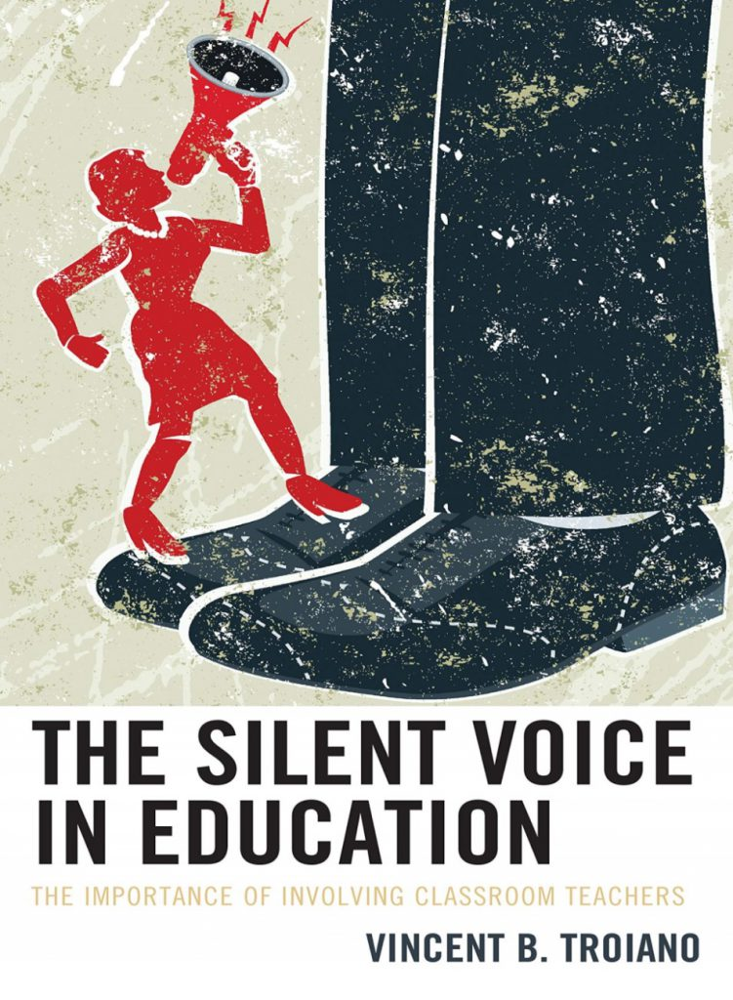

The Importance of Involving Classroom Teachers
A 36-year veteran educator examines how the 1960s reform era sidelined classroom teachers -- and what it cost American students in special education and beyond.

"Classroom teachers became the silent voices in education -- and the cost was borne by the students who needed them most."
Education in our country lost an opportunity to move forward in a positive manner when some parts of the education establishment moved too quickly with reforms in the 1960s. The promise of "new math," middle school, and special education were taken seriously -- but without a sound basis of successful classroom instruction upon which these concepts were constructed.
In that process, classroom pedagogy began to be ignored as a necessary criterion upon which school programs should be constructed. Classroom teachers became the silent voices in education. Levels of bureaucracy that separate school districts from the kind of decision-making authority that would have made a difference in educational opportunity for many students is also discussed.
Special education reform is examined with a critical look at Child Study Team responsibilities and individual instruction. An unpublished study on handedness by the author is also presented -- a comparison of the handedness of students identified as emotionally disturbed and those in regular classes. Frontal lobe development of the brain is briefly discussed.
There can be no move toward local control of education without the voice of classroom teachers. Only information generated by classroom teachers, given directly to school boards, would form the primary basis of movement to make local education more relevant to the student population.
When policy is built without the people doing the teaching, everyone loses -- especially the students least equipped to adapt to poorly designed change.
Read more →The gap between an IEP on paper and what a teacher faces Monday morning is wider than most policymakers will ever know.
Read more →An ambitious idea rushed to scale without classroom grounding -- a pattern that keeps repeating itself in American education policy.
Read more →Get new essays on education reform, special education, and classroom teaching delivered to your inbox.